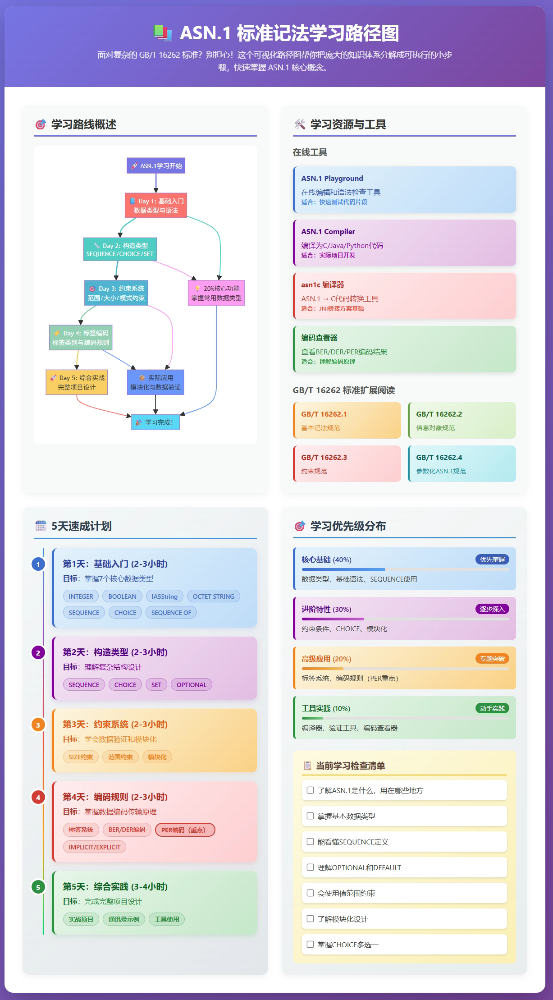

入门教程
标准解读
实践记录
Recommendation ITU-T X.660 (2011) | ISO/IEC 9834-1:2012, Information technology – Open Systems Interconnection – Procedures for the operation of OSI Registration Authorities: General procedures and top arcs of the ASN.1 International Object Identifier tree.